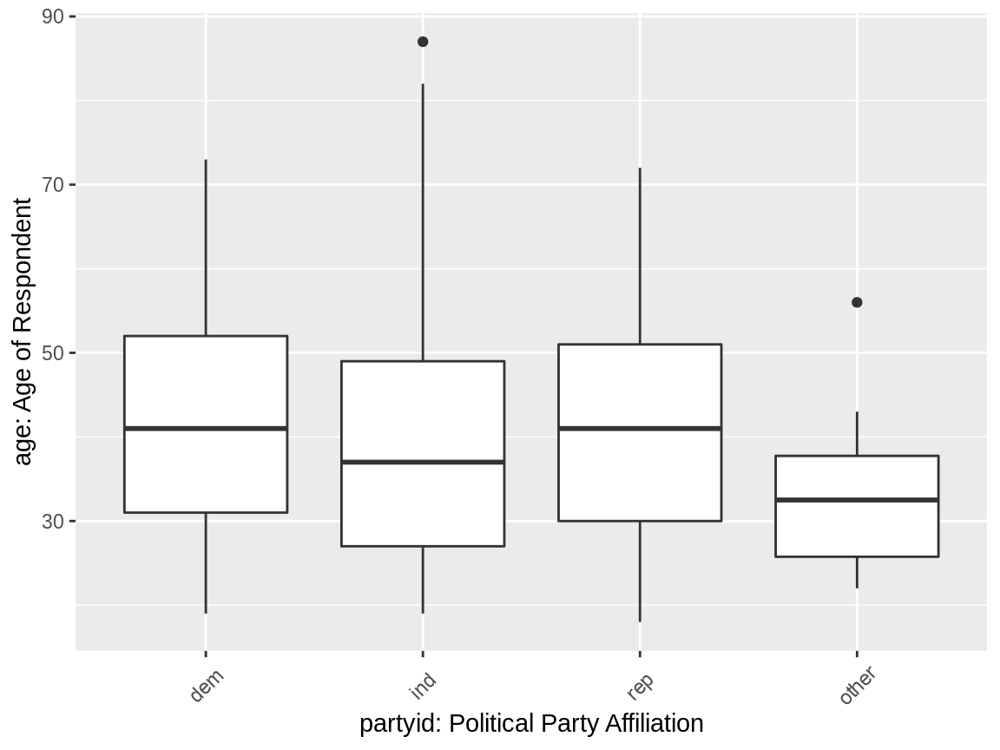
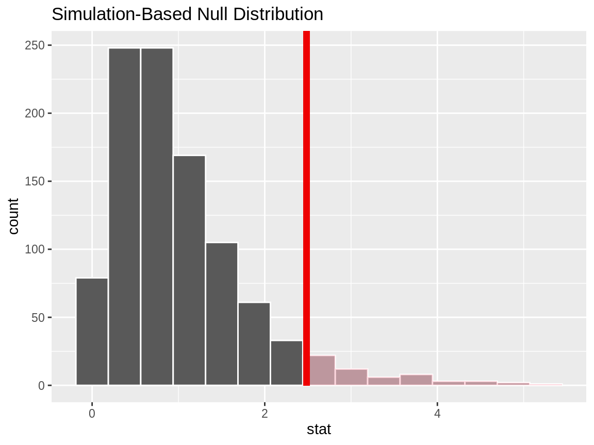
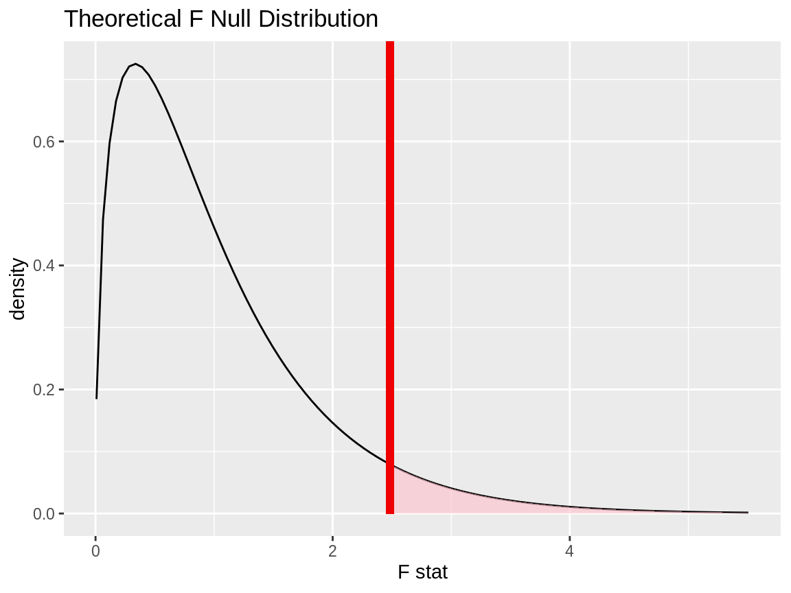
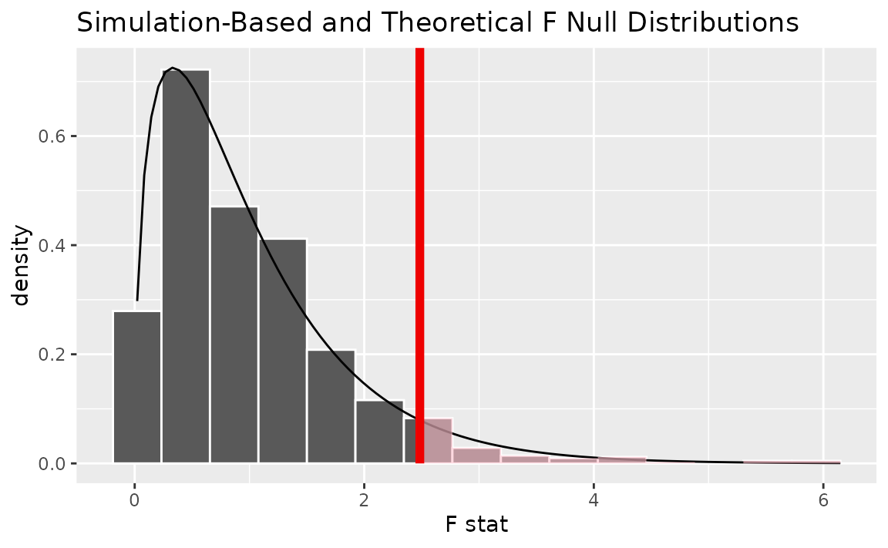

In this vignette, we’ll walk through conducting an analysis of variance (ANOVA) test using infer. ANOVAs are used to analyze differences in group means.
Throughout this vignette, we’ll make use of the gss dataset supplied by infer, which contains a sample of data from the General Social Survey. See ?gss for more information on the variables included and their source. Note that this data (and our examples on it) are for demonstration purposes only, and will not necessarily provide accurate estimates unless weighted properly. For these examples, let’s suppose that this dataset is a representative sample of a population we want to learn about: American adults. The data looks like this:
dplyr::glimpse(gss)## Rows: 500
## Columns: 11
## $ year <dbl> 2014, 1994, 1998, 1996, 1994, 1996, 1990, 2016, 2000, 19…
## $ age <dbl> 36, 34, 24, 42, 31, 32, 48, 36, 30, 33, 21, 30, 38, 49, …
## $ sex <fct> male, female, male, male, male, female, female, female, …
## $ college <fct> degree, no degree, degree, no degree, degree, no degree,…
## $ partyid <fct> ind, rep, ind, ind, rep, rep, dem, ind, rep, dem, dem, i…
## $ hompop <dbl> 3, 4, 1, 4, 2, 4, 2, 1, 5, 2, 4, 3, 4, 4, 2, 2, 3, 2, 1,…
## $ hours <dbl> 50, 31, 40, 40, 40, 53, 32, 20, 40, 40, 23, 52, 38, 72, …
## $ income <ord> $25000 or more, $20000 - 24999, $25000 or more, $25000 o…
## $ class <fct> middle class, working class, working class, working clas…
## $ finrela <fct> below average, below average, below average, above avera…
## $ weight <dbl> 0.8960, 1.0825, 0.5501, 1.0864, 1.0825, 1.0864, 1.0627, …To carry out an ANOVA, we’ll examine the association between age and political party affiliation in the United States. The age variable is a numerical variable measuring the respondents’ age at the time that the survey was taken, and partyid is a factor variable with unique values ind, rep, dem, other.
This is what the relationship looks like in the observed data:

If there were no relationship, we would expect to see the each of these boxplots lining up along the y-axis. It looks like the average age of democrats and republicans seems to be a bit larger than independent and other American voters. Is this difference just random noise, though?
First, to calculate the observed statistic, we can use specify() and calculate().
# calculate the observed statistic
observed_f_statistic <- gss %>%
specify(age ~ partyid) %>%
hypothesize(null = "independence") %>%
calculate(stat = "F")The observed \(F\) statistic is 2.4842. Now, we want to compare this statistic to a null distribution, generated under the assumption that age and political party affiliation are not actually related, to get a sense of how likely it would be for us to see this observed statistic if there were actually no association between the two variables.
We can generate an approximation of the null distribution using randomization. The randomization approach permutes the response and explanatory variables, so that each person’s party affiliation is matched up with a random age from the sample in order to break up any association between the two.
# generate the null distribution using randomization
null_dist <- gss %>%
specify(age ~ partyid) %>%
hypothesize(null = "independence") %>%
generate(reps = 1000, type = "permute") %>%
calculate(stat = "F")Note that, in the line specify(age ~ partyid) above, we could use the equivalent syntax specify(response = age, explanatory = partyid).
To get a sense for what this distribution looks like, and where our observed statistic falls, we can use visualize():
# visualize the null distribution and test statistic!
null_dist %>%
visualize() +
shade_p_value(observed_f_statistic,
direction = "greater")
We could also visualize the observed statistic against the theoretical null distribution. To do so, use the assume() verb to define a theoretical null distribution and then pass it to visualize() like a null distribution outputted from generate() and calculate().
# visualize the theoretical null distribution and test statistic!
null_dist_theory <- gss %>%
specify(age ~ partyid) %>%
assume(distribution = "F")
visualize(null_dist_theory) +
shade_p_value(observed_f_statistic,
direction = "greater")
To visualize both the randomization-based and theoretical null distributions to get a sense of how the two relate, we can pipe the randomization-based null distribution into visualize(), and then further provide method = "both" to visualize().
# visualize both null distributions and the test statistic!
null_dist %>%
visualize(method = "both") +
shade_p_value(observed_f_statistic,
direction = "greater")
Either way, it looks like our observed test statistic would be quite unlikely if there were actually no association between age and political party affiliation. More exactly, we can approximate the p-value from the randomization-based approximation to the null distribution:
# calculate the p value from the observed statistic and null distribution
p_value <- null_dist %>%
get_p_value(obs_stat = observed_f_statistic,
direction = "greater")
p_value## # A tibble: 1 × 1
## p_value
## <dbl>
## 1 0.057Thus, if there were really no relationship between age and political party affiliation, our approximation of the probability that we would see a statistic as or more extreme than 2.4842 is approximately 0.057.
To calculate the p-value using the true \(F\) distribution, we can use the pf function from base R. This function allows us to situate the test statistic we calculated previously in the \(F\) distribution with the appropriate degrees of freedom.
pf(observed_f_statistic$stat, 3, 496, lower.tail = FALSE)## [1] 0.06006Note that, while the observed statistic stays the same, the resulting p-value differs slightly between these two approaches since the randomization-based empirical \(F\) distribution is an approximation of the true \(F\) distribution.
The package currently does not supply a wrapper for tidy ANOVA tests.